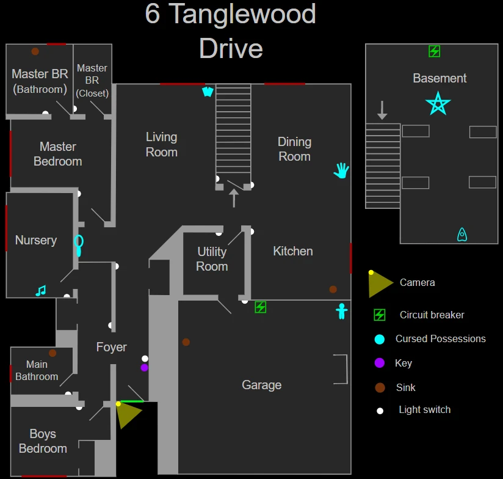

В доме есть три спальни (включая детскую), два туалета, гараж и подвал, а также другие помещения. На этой карте в детской есть один плюшевый мишка. Советы по местоположению Спальня состоит из двух частей: непосредственно спальни и примыкающих к ней ванной комнаты и подсобки, в которую призраки редко заглядывают. Прихожая поделена на две части: на коридор, начинающийся от входной двери до шкафа в конце, и на коридор, параллельный ему, соединяющий спальню мальчика, детскую и главную ванную комнату. Это стоит учитывать при расстановке камер.
6 Tanglewood Drive
6 Tanglewood Drive (или просто Tanglewood) — это маленькая карта в Phasmophobia. Это небольшой одноэтажный дом с тремя спальнями и двумя ванными комнатами. Из-за своих небольших размеров, исследования на локации проводятся быстро, но открытая планировка и только три доступных шкафа делают её опасной во время охоты.
Структура
Укрытия и стратегии
В доме есть три шкафа в начале локации, два небольших железных шкафчика в гараже и два укромных уголка, которые можно использовать как укрытия:
- В детской комнате за кроваткой
- В подвале за двумя кусками фанеры
- Любитель: —
- Средняя: ≤ 3
- Профессионал: ≤ 4
- Кошмар/Безумие: ≤ 5
- Игра втроём: +1 открытое укрытие
- Игра вчетвером: +2 открытых укрытия
Советы
Можно использовать видеокамеру, чтобы искать призрачный огонёк в спальне мальчика через окно ещё до того, как игрок войдёт.